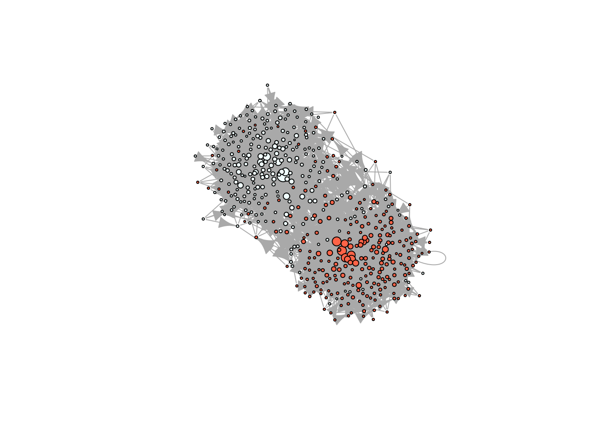

9.3 Simulation of diffusion processes
Before we start, a review of the concepts we will be using here
- Exposure: Proportion/number of neighbors that have adopted an innovation at each point in time.
- Threshold: The proportion/number of your neighbors who had adopted at or one time period before ego (the focal individual) adopted.
- Infectiousness: How much \(i\)’s adoption affects her alters.
- Susceptibility: How much \(i\)’s alters’ adoption affects her.
- Structural equivalence: How similar is \(i\) to \(j\) in terms of position in the network.
9.3.1 Simulating diffusion networks
We will simulate a diffusion network with the following parameters:
- Will have 1,000 vertices,
- Will span 20 time periods,
- The initial adopters (seeds) will be selected at random,
- Seeds will be a 10% of the network,
- The graph (network) will be small-world,
- Will use the WS algorithm with \(p=.2\) (probability of rewiring).
- Threshold levels will be uniformly distributed between [0.3, 0.7]
To generate this diffusion network, we can use the rdiffnet function included in the package:
# Setting the seed for the RNG
set.seed(1213)
# Generating a random diffusion network
net <- rdiffnet(
n = 1e3, # 1.
t = 20, # 2.
seed.nodes = "random", # 3.
seed.p.adopt = .1, # 4.
seed.graph = "small-world", # 5.
rgraph.args = list(p=.2), # 6.
threshold.dist = function(x) runif(1, .3, .7) # 7.
)The function
rdiffnetgenerates random diffusion networks. Main features:Simulating random graph or using your own,
Setting threshold levels per node,
Network rewiring throughout the simulation, and
Setting the seed nodes.
The simulation algorithm is as follows:
If required, a baseline graph is created,
Set of initial adopters and threshold distribution are established,
The set of t networks is created (if required), and
Simulation starts at t=2, assigning adopters based on exposures and thresholds:
For each \(i \in N\), if its exposure at \(t-1\) is greater than its threshold, then adopts, otherwise, continue without change.
next \(i\)
9.3.2 Rumor spreading
library(netdiffuseR)
set.seed(09)
diffnet_rumor <- rdiffnet(
n = 5e2,
t = 5,
seed.graph = "small-world",
rgraph.args = list(k = 4, p = .3),
seed.nodes = "random",
seed.p.adopt = .05,
rewire = TRUE,
threshold.dist = function(i) 1L,
exposure.args = list(normalized = FALSE)
)## Diffusion network summary statistics
## Name : A diffusion network
## Behavior : Random contagion
## -----------------------------------------------------------------------------
## Period Adopters Cum Adopt. (%) Hazard Rate Density Moran's I (sd)
## -------- ---------- ---------------- ------------- --------- ----------------
## 1 25 25 (0.05) - 0.01 -0.00 (0.00)
## 2 78 103 (0.21) 0.16 0.01 0.01 (0.00) ***
## 3 187 290 (0.58) 0.47 0.01 0.01 (0.00) ***
## 4 183 473 (0.95) 0.87 0.01 0.01 (0.00) ***
## 5 27 500 (1.00) 1.00 0.01 -
## -----------------------------------------------------------------------------
## Left censoring : 0.05 (25)
## Right centoring : 0.00 (0)
## # of nodes : 500
##
## Moran's I was computed on contemporaneous autocorrelation using 1/geodesic
## values. Significane levels *** <= .01, ** <= .05, * <= .1.
# We want to use igraph to compute layout
igdf <- diffnet_to_igraph(diffnet_rumor, slices=c(1,2))[[1]]
pos <- igraph::layout_with_drl(igdf)
plot_diffnet2(diffnet_rumor, vertex.size = dgr(diffnet_rumor)[,1], layout=pos)
9.3.3 Difussion
set.seed(09)
diffnet_complex <- rdiffnet(
seed.graph = diffnet_rumor$graph,
seed.nodes = which(diffnet_rumor$toa == 1),
rewire = FALSE,
threshold.dist = function(i) rbeta(1, 3, 10),
name = "Diffusion",
behavior = "Some social behavior"
)plot_adopters(diffnet_rumor, what = "cumadopt", include.legend = FALSE)
plot_adopters(diffnet_complex, bg="tomato", add=TRUE, what = "cumadopt")
legend("topleft", legend = c("Disease", "Complex"), col = c("lightblue", "tomato"),
bty = "n", pch=19)
9.3.4 Mentor Matching
# Finding mentors
mentors <- mentor_matching(diffnet_rumor, 25, lead.ties.method = "random")
# Simulating diffusion with these mentors
set.seed(09)
diffnet_mentored <- rdiffnet(
seed.graph = diffnet_complex,
seed.nodes = which(mentors$`1`$isleader),
rewire = FALSE,
threshold.dist = diffnet_complex[["real_threshold"]],
name = "Diffusion using Mentors"
)
summary(diffnet_mentored)## Diffusion network summary statistics
## Name : Diffusion using Mentors
## Behavior : Random contagion
## -----------------------------------------------------------------------------
## Period Adopters Cum Adopt. (%) Hazard Rate Density Moran's I (sd)
## -------- ---------- ---------------- ------------- --------- ----------------
## 1 25 25 (0.05) - 0.01 -0.00 (0.00)
## 2 92 117 (0.23) 0.19 0.01 0.01 (0.00) ***
## 3 152 269 (0.54) 0.40 0.01 0.01 (0.00) ***
## 4 150 419 (0.84) 0.65 0.01 0.01 (0.00) ***
## 5 73 492 (0.98) 0.90 0.01 -0.00 (0.00) **
## -----------------------------------------------------------------------------
## Left censoring : 0.05 (25)
## Right centoring : 0.02 (8)
## # of nodes : 500
##
## Moran's I was computed on contemporaneous autocorrelation using 1/geodesic
## values. Significane levels *** <= .01, ** <= .05, * <= .1.## 1 2 3 4 5
## num 25.00 80.00 183.0000 338.0000000 470.0000000
## prop 0.05 0.16 0.3660 0.6760000 0.9400000
## rate 0.00 2.20 1.2875 0.8469945 0.3905325## 1 2 3 4 5
## num 25.00 117.000 269.000000 419.0000000 492.0000000
## prop 0.05 0.234 0.538000 0.8380000 0.9840000
## rate 0.00 3.680 1.299145 0.5576208 0.17422439.3.5 Example by changing threshold
# Simulating a scale-free homophilic network
set.seed(1231)
X <- rep(c(1,1,1,1,1,0,0,0,0,0), 50)
net <- rgraph_ba(t = 499, m=4, eta = X)
# Taking a look in igraph
ig <- igraph::graph_from_adjacency_matrix(net)
plot(ig, vertex.color = c("azure", "tomato")[X+1], vertex.label = NA,
vertex.size = sqrt(dgr(net)))
# Now, simulating a bunch of diffusion processes
nsim <- 500L
ans_1and2 <- vector("list", nsim)
set.seed(223)
for (i in 1:nsim) {
# We just want the cum adopt count
ans_1and2[[i]] <-
cumulative_adopt_count(
rdiffnet(
seed.graph = net,
t = 10,
threshold.dist = sample(1:2, 500L, TRUE),
seed.nodes = "random",
seed.p.adopt = .10,
exposure.args = list(outgoing = FALSE, normalized = FALSE),
rewire = FALSE
)
)
# Are we there yet?
if (!(i %% 50))
message("Simulation ", i," of ", nsim, " done.")
}
## Simulation 50 of 500 done.
## Simulation 100 of 500 done.
## Simulation 150 of 500 done.
## Simulation 200 of 500 done.
## Simulation 250 of 500 done.
## Simulation 300 of 500 done.
## Simulation 350 of 500 done.
## Simulation 400 of 500 done.
## Simulation 450 of 500 done.
## Simulation 500 of 500 done.
# Extracting prop
ans_1and2 <- do.call(rbind, lapply(ans_1and2, "[", i="prop", j=))
ans_2and3 <- vector("list", nsim)
set.seed(223)
for (i in 1:nsim) {
# We just want the cum adopt count
ans_2and3[[i]] <-
cumulative_adopt_count(
rdiffnet(
seed.graph = net,
t = 10,
threshold.dist = sample(2:3, 500L, TRUE),
seed.nodes = "random",
seed.p.adopt = .10,
exposure.args = list(outgoing = FALSE, normalized = FALSE),
rewire = FALSE
)
)
# Are we there yet?
if (!(i %% 50))
message("Simulation ", i," of ", nsim, " done.")
}
## Simulation 50 of 500 done.
## Simulation 100 of 500 done.
## Simulation 150 of 500 done.
## Simulation 200 of 500 done.
## Simulation 250 of 500 done.
## Simulation 300 of 500 done.
## Simulation 350 of 500 done.
## Simulation 400 of 500 done.
## Simulation 450 of 500 done.
## Simulation 500 of 500 done.
ans_2and3 <- do.call(rbind, lapply(ans_2and3, "[", i="prop", j=))We can simplify by using the function rdiffnet_multiple. The following lines of code accomplish the same as the previous code avoiding the for-loop (from the user’s perspective). Besides of the usual parameters passed to rdiffnet, the rdiffnet_multiple function requires R (number of repetitions/simulations), and statistic (a function that returns the statistic of interest). Optionally, the user may choose to specify the number of clusters to run it in parallel (multiple CPUs):
ans_1and3 <- rdiffnet_multiple(
# Num of sim
R = nsim,
# Statistic
statistic = function(d) cumulative_adopt_count(d)["prop",],
seed.graph = net,
t = 10,
threshold.dist = sample(1:3, 500, TRUE),
seed.nodes = "random",
seed.p.adopt = .1,
rewire = FALSE,
exposure.args = list(outgoing=FALSE, normalized=FALSE),
# Running on 4 cores
ncpus = 4L
)boxplot(ans_1and2, col="ivory", xlab = "Time", ylab = "Threshold")
boxplot(ans_2and3, col="tomato", add=TRUE)
boxplot(t(ans_1and3), col = "steelblue", add=TRUE)
legend(
"topleft",
fill = c("ivory", "tomato", "steelblue"),
legend = c("1/2", "2/3", "1/3"),
title = "Threshold range",
bty ="n"
)